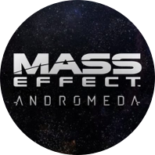

 <!DOCTYPE html>

<html>

<title>Apex Legends Site and Reveal, JenningsHanna.com, Jennings Hanna is an Interaction Designer and Content Strategist</title>

<meta name="viewport" content="width=device-width, initial-scale=1">

 <!-- CSS RESET ERIC MEYER
 <link rel="stylesheet" type="text/css" href="assets/reset.css" />
 -->
<link rel="shortcut icon" href="/favicon.ico" type="image/x-icon">
<link rel="icon" href="/favicon.ico" type="image/x-icon">
 
 <!-- Skeleton CSS -->
 <link rel="stylesheet" href="assets/skeleton/normalize.css">
 <link rel="stylesheet" href="assets/skeleton/skeleton.css">
 
 <!-- MY CSS -->
 <link rel="stylesheet" type="text/css" href="assets/style.css" />
 
 <!-- GOOGLE WEB FONT - 'Open Sans' Normal 400 -->
 <link href='http://fonts.googleapis.com/css?family=Open+Sans' rel='stylesheet' type='text/css'>
 
  <!-- FONT AWESOME -->
 <link rel="stylesheet" href="https://maxcdn.bootstrapcdn.com/font-awesome/4.4.0/css/font-awesome.min.css">

</html>

<body >
	<div class="container top">
		<div id="pencil"></div>
		<div class="row">
			<div class="twelve columns">
				<p class="color"><a href="enter.html"></a></p>
				<p class="color">Mass Effect is a beloved franchise produced by the worlds greatest RPG studio, BioWare. We supported the live service of this game by building an online portal that gave weekly updates. Visitors would use the site to see what the weeks rewards were, watch a weekly developer livestream, and receive custom orders from Commander Kandros or, more urgently, get a breaking news update from the Helius News Network.</p>

<p class="color">Here's a video of the mission and the app pages:</p>

<iframe width="560" height="315" src="https://www.youtube.com/embed/9Fc_dxOOPuI" frameborder="0" allow="accelerometer; autoplay; encrypted-media; gyroscope; picture-in-picture" allowfullscreen></iframe>

<p class="color">Another initiative we worked on was sharing and creating UGC with our community. We called these <i>Andromeda Moments</i> . We asked players to share they're favorite moments of the game and we published their post on our site for the community to celebrate. At the end of the campaign we created a big logo out of all post that were shared and offered it for free to the community to do with as they pleased.</p>

<p class="color">Here's a video of the Moments page:</p>

<iframe width="560" height="315" src="https://www.youtube.com/embed/arPVqYQzVpk" frameborder="0" allow="accelerometer; autoplay; encrypted-media; gyroscope; picture-in-picture" allowfullscreen></iframe>

<p></p>
<p class="color">Of course as long as the site is up, you can browse it <a href="" target="_blank">here</a>.</p>

			</div>
		</div>
		
		<div class="row">
			<div id="pencil2"></div>
		</div>
		<div class="row portfolio-cards">
			<div class="twelve columns">
				<div class="card ea">
					<p class="color"><a href="ea.html">More EA Projects</a></p>
				</div>
			</div>
		</div>
	</div>
	
<script src="https://ajax.googleapis.com/ajax/libs/jquery/1.11.1/jquery.min.js"></script>
<!-- <script src="assets/js/jquery.animate-colors-min.js"></script> -->
<script src="//cdn.jsdelivr.net/jquery.color-animation/1/mainfile"></script>
<script src="assets/js/spectrum.js"></script>
<script src="assets/js/imgswap.js"></script>
<script src="assets/js/analytics.js"></script>

</body>